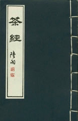

茶之精神
-
茶道文化
唐朝有一個叫陸羽的人通過對茶進行多年的觀察和研究，撰寫了《茶經》一書，此書總結出一套科學的種茶、採茶、煮茶、品茶的方法，並賦予茶藝一種深刻的文化內涵，形成了最初的茶道。後人稱陸羽為「茶聖」。
茶道文化體現了東方傳統文化精神的特點，是「茶」與「道」的結合。
中國古代聖賢老子曾經說：「道可道，非常道。」道不是一般的道。又說：「大道泛兮，其可左右。」可見「道」又無處不在。那麼甚麼是「道」呢？中國儒家著名經典《中庸》裏講：「天命之謂性；率性之謂道。」
其實「道」的真諦是告訴我們宇宙中萬事萬物的生存，包括天體的運轉，人類的繁衍，朝代的更替，人的生老病死，都是依「道」而行的，都是有一定的規律，物質的成、住、壞、滅，那都是宇宙的規律
所以人能做到的就是「返本歸真」，返回到自己先天的本性上去，因為人先天的本性是純真、善良的，是與宇宙溝通的，這樣才能達到天人合一，道法自然的境界，這就是古人常說的修行之「道」。
所以「道」體現出了宇宙、人生的法則與規律，因此，中國人不輕易言道，認為那是很高深的東西，是不能明明白白拿出來談，而近代中國人卻都被「迷信」二字擋在了「道」之外。不像日本茶有茶道，花有花道，香有香道，劍有劍道，練摔跤搏擊也有柔道、跆拳道。
其實，在中國古代各行各業都有「道」存在，人們也有尋仙慕道的志趣，因此古人品茶也有茶道。
茶道文化是一種「中介」文化，以茶為載體，作為傳承中華傳統文化的精神。唐代劉貞亮在飲茶十德中也明確提出：「以茶可行道，以茶可雅志。」那麼，甚麼是茶道呢？
表面上說就是由茶禮、茶規、茶法、茶技、茶藝、茶心這六事構成，稱作茶道六事。茶道修習就是通過茶道六事來證悟茶道精神。茶道修習的表面是「技」，但他的重點不是「技」，而是「心」。但要修習茶心，又必須從修習茶技開始，所以明白這個道理，才可以談茶論道。
-
茶道之「苦」
茶是苦的，但卻苦的有味，品茶的人從茶的味道中來品味人生的苦，人生有多少苦呢？佛家認為，有生苦、老苦、病苦、死苦、怨憎會苦、愛別離苦、求不得苦等等，總而言之，凡是構成人類存在的所有物質以及人類生存過程中精神因素，都可以給人帶來「苦惱」，所以佛說「苦海無邊，回頭是岸」。
這與道家的返本歸真其實是一樣的道理，所以要看透人生，看破生死，才能求得對「苦」的解脫。茶性也苦，李時珍在《本草綱目》中載：「茶苦而寒，陰中之陰，最能降火，火為百病，火降則上清矣。」從茶的苦後回甘，苦中有甘的特性，體悟做人的道理，節儉、淡泊、以苦為樂。
-
茶道中的虛靜之美
茶道講究「和靜怡真」，把「靜」作為達到心齋座忘，滌除玄鑑、澄懷味道的必由之路。這虛靜之「靜」，是不是意味著自始至終需「靜」得鴉雀無聲，需「靜」得肅穆莊嚴呢？當然不是這樣。
中國茶道審美文化中的虛靜之說，實質上是指心靈世界的虛靜，至於外界環境的寧靜，兼顧即可。只要自我心靈不失虛靜，則茗敘也罷、說笑也罷、聽曲也罷、賞戲也罷皆無不可。
在品茗之前，需放下心中的煩惱、執著，靜下神來，定下心來，開始走進品茗審美的境界，靜靜領悟茶之色、茶之香、茶之味、茶之形的種種美感從而靜觀、反思人生，陶冶心性、達到心靈的空靜，怡然自得，體會虛靜之美。
-
茶道之「平凡」
日本茶道宗師千利休曾說過：「須知道茶之本不過是燒水點茶。」此話一語中的。茶道的本質，確實是從微不足道的日常生活瑣碎中，去感悟宇宙的奧秘和人生的哲理。修佛修道也是要求人們通過生活中一點一滴的「修和煉」，從平凡的小事中去徹悟大道。
所以古人說，「勿以善小而不為，勿以惡小而為之。」不要因為是很小的好事，就不去做，因為每行一善，必積福德；當然也不要是很小的壞事，就任意妄為，因為壞事做多了，必將消減福分，嚴重的還會折損壽祿，害及家人。也許你不會即刻看到效果，但積少成多，世間的善惡因果總會有回報之時的。
-
茶道之「放下」
人的苦惱，歸根結底是因為「放不下」，所以，佛家講「放下」。修行須放下一切方能入道，否則徒勞無益。放下一切是放甚麼呢？放下人生的苦惱，放下人生的名利情，放下各種各樣的執著、慾望，放下一切「放不下的心」，放下了一切，人自然輕鬆無比，看世界天藍海碧，山清水秀，日麗風和，月明星朗。
品茶也強調「放」，放下手頭工作，偷得浮生半日閒，放鬆一下自己緊繃的神經，放鬆一下封閉的心靈。有詩最妙：放下亦放下，何處來牽掛？做個無心人，笑談星月大，願大家都做個放得下、無牽掛的茶人。
所以修行茶道之首要就是修心養性，從茶味中品其苦，看透人生，靜觀其變，心性空靈，在日常平凡中見真性，最後能放得下人生的苦樂，通徹人生的哲理，宇宙的奧妙，返本歸真。
所以神給人留下的每一種行業，每一種文化都可以幫助人修煉心性，提高生命的境界，因為在神的眼裏，人根本不是來在世上當人的，而是有著更深刻的內含與意義，神時刻都在點醒人，看護著人，希望人能真正的走上返本歸真的成神之路上來。